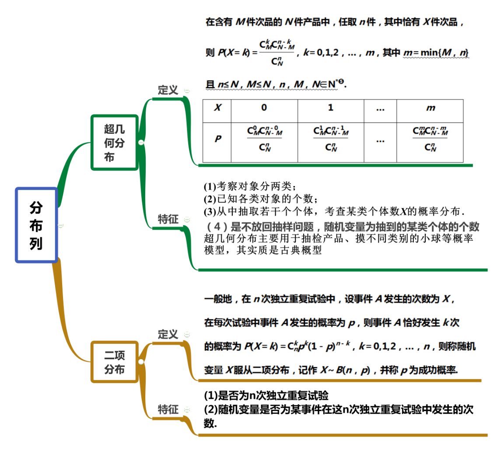
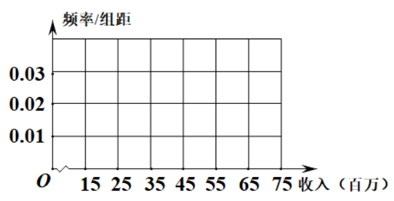
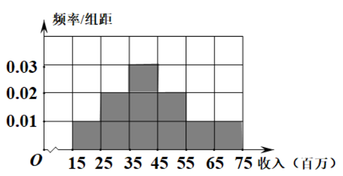
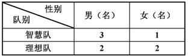
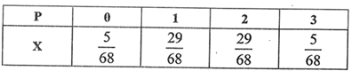
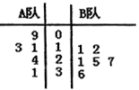
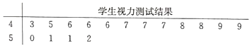

← 概率资料目录考点 36 · 超几何分布与二项分布 · 练习
资料来源：学科网一轮复习笔记 · 共 8 题
超几何分布与二项分布思维导图
点击图片查看原图第 1 题
1．某市调硏机构对该市工薪阶层对“楼市限购令”态度进行调查，抽调了50名市民，他们月收入频数分布表和对“楼市限购令”赞成人数如下表：
月收入（单位：百元）
|
|
|
|
|
|
|
频数
|
5
|
|
|
10
|
5
|
5
|
频率
|
0.1
|

|

|
0.2
|
0.1
|
0.1
|
赞成人数
|
4
|
8
|
12
|
5
|
2
|
1
|
（1）若所抽调的50名市民中，收入在
的有15名，求，，
的值，并完成频率分布直方图．

（2）若从收入（单位：百元）在
的被调查者中随机选取2人进行追踪调查，选中的2人中恰有 人赞成“楼市限购令”，求
的分布列与数学期望．
人赞成“楼市限购令”，求
的分布列与数学期望．
（3）从月收入频率分布表的6组市民中分别随机抽取3名市民，恰有一组的3名市民都不赞成“楼市限购令”，根据表格数据，判断这3名市民来自哪组的可能性最大？请直接写出你的判断结果．
查看答案与解析
【答案】（1），频率分布直方图见解析；（2）分布列见解析，；（3）来自 的可能性最大．
的可能性最大．
【解析】（1）由频率分布表得：，即
．
 收入在
的有
收入在
的有 名，，，，
名，，，，
则频率分布直方图如下：

（2）
收入在 中赞成人数为
中赞成人数为 ，不赞成人数为
，不赞成人数为 ，
，
 可能取值为，
可能取值为，
则；；，
的分布列为：
．
（3）来自
的可能性更大．
第 2 题
2．某大学数学学院拟从往年的智慧队和理想队中选拔4名大学生组成志愿者招募宣传队.往年的智慧对和理想队的构成数据如下表所示，现要求选出的4名大学生中两队中的大学生都要有.

（1）求选出的4名大学生仅有1名女生的概率；
（2）记选出的4名大学生中女生的人数为，求随机变量
的分布列和数学期望.
查看答案与解析
【答案】(1)
;(2)见解析.
【解析】（1）选出的4人中智慧队和理想队的都要有，所以选法种数是：
（种）
选出的4名大学生仅有1名女生的选法有：
从智慧队中选取1女生的选法共有
（种）
从理想队中选取1女生的选法共有
（种）
或者用排除法：
（种）
所以，选出的4名大学生仅有1名女生的概率为
（2）随机变量
的可能取值为0，1，2，3
则，
，
，
，
所以随机变量
的分布列为

.
第 3 题
3．某电视台举行一个比赛类型的娱乐节目，
两队各有六名选手参赛，将他们首轮的比赛成绩作为样本数据，绘制成茎叶图如图所示，为了增加节目的趣味性，主持人故意将 队第六位选手的成绩没有给出，并且告知大家
队第六位选手的成绩没有给出，并且告知大家 队的平均分比
队的平均分多4分，同时规定如果某位选手的成绩不少于21分，则获得“晋级”．
队的平均分比
队的平均分多4分，同时规定如果某位选手的成绩不少于21分，则获得“晋级”．

（1）根据茎叶图中的数据，求出
队第六位选手的成绩；
（2）主持人从
队所有选手成绩中随机抽2个，求至少有一个为“晋级”的概率；
（3）主持人从
两队所有选手成绩分别随机抽取2个，记抽取到“晋级”选手的总人数为 ，求
的分布列．
，求
的分布列．
查看答案与解析
【答案】（1）20；（2） ；（3）答案见解析.
；（3）答案见解析.
【解析】（1）
队选手的平均分为，
设
队第6位选手的成绩为 ，
，
则，得
（2）
队中成绩不少于21分的有2个，从中抽取2个至少有一个为“晋级”的对立事件为两人都没有“晋级”，则概率
（3）
的可能取值有0，1，2，3，4，
∴
的分布列为
|
0
|
1
|
2
|
3
|
4
|

|
|
|
|
|
|
第 4 题
1．某学校实行自主招生，参加自主招生的学生从8个试题中随机挑选出4个进行作答，至少答对3个才能通过初试已知甲、乙两人参加初试，在这8个试题中甲能答对6个，乙能答对每个试题的概率为，且甲、乙两人是否答对每个试题互不影响.
（1）试通过概率计算，分析甲、乙两人谁通过自主招生初试的可能性更大；
（2）若答对一题得5分，答错或不答得0分，记乙答题的得分为 ，求
的分布列及数学期望和方差.
，求
的分布列及数学期望和方差.
查看答案与解析
【答案】（1）甲通过自主招生初试的可能性更大.（2）见解析，，.
【解析】（1）参加自主招生的学生从8个试题中随机挑选出4个进行作答，至少答对3个才能通过初试，在这8个试题中甲能答对6个，
 甲通过自主招生初试的概率
甲通过自主招生初试的概率
参加自主招生的学生从8个试题中随机挑选出4个进行作答，至少答对3个才能通过初试.
在这8个试题中乙能答对每个试题的概率为，
乙通过自主招生初试的概率
，
甲通过自主招生初试的可能性更大.
（2）根据题意，乙答对题的个数
的可能取值为0，1，2，3，4.
且
的概率分布列为：
.
第 5 题
2．2020年1月10日，引发新冠肺炎疫情的
病毒基因序列公布后，科学家们便开始了病毒疫苗的研究过程.但是类似这种病毒疫苗的研制需要科学的流程，不是一朝一夕能完成的，其中有一步就是做动物试验.已知一个科研团队用小白鼠做接种试验，检测接种疫苗后是否出现抗体.试验设计是：每天接种一次，3天为一个接种周期.已知小白鼠接种后当天出现抗体的概率为 ，假设每次接种后当天是否出现抗体与上次接种无关.
，假设每次接种后当天是否出现抗体与上次接种无关.
（1）求一个接种周期内出现抗体次数
的分布列；
（2）已知每天接种一次花费100元，现有以下两种试验方案：
①若在一个接种周期内连续2次出现抗体即终止本周期试验，进行下一接种周期，试验持续三个接种周期，设此种试验方式的花费为
元；
②若在一个接种周期内出现2次或3次抗体，该周期结束后终止试验，已知试验至多持续三个接种周期，设此种试验方式的花费为
元.本着节约成本的原则，选择哪种实验方案.
查看答案与解析
【答案】（1）分布列见解析；（2）①
元；②选择方案二.
【解析】（1）由题意可知，随机变量
服从二项分布，
故
（
）
则
的分布列为
（2）①设一个接种周期的接种费用为
元，则
可能的取值为200，300，
因为，，
所以.
所以三个接种周期的平均花费为.
②随机变量
可能的取值为300，600，900，
设事件
为“在一个接种周期内出现2次或3次抗体”，由（1）知，.
所以，
，
，
所以
因为.
所以选择方案二.
第 6 题
3．某校高三男生体育课上做投篮球游戏，两人一组，每轮游戏中，每小组两人每人投篮两次，投篮投进的次数之和不少于
次称为“优秀小组”.小明与小亮同一小组，小明、小亮投篮投进的概率分别为.
（1）若，，则在第一轮游戏他们获“优秀小组”的概率；
（2）若
则游戏中小明小亮小组要想获得“优秀小组”次数为 次，则理论上至少要进行多少轮游戏才行？并求此时
的值.
次，则理论上至少要进行多少轮游戏才行？并求此时
的值.
查看答案与解析
【答案】（1） （2）理论上至少要进行
轮游戏.
（2）理论上至少要进行
轮游戏.
【解析】（1）由题可知,所以可能的情况有①小明投中1次,小亮投中2次；②小明投中2次,小亮投中1次；③小明投中2次,小亮投中2次.
故所求概率
（2）他们在一轮游戏中获“优秀小组”的概率为
因为,所以
因为,,,所以,,又
所以,令,以,则
当
时,,他们小组在 轮游戏中获“优秀小组”次数
满足
轮游戏中获“优秀小组”次数
满足
由,则,所以理论上至少要进行
轮游戏.此时,,
第 7 题
4．2020年1月10日，引发新冠肺炎疫情的COVID-9病毒基因序列公布后，科学家们便开始了病毒疫苗的研究过程.但是类似这种病毒疫苗的研制需要科学的流程，不是一朝一夕能完成的，其中有一步就是做动物试验.已知一个科研团队用小白鼠做接种试验，检测接种疫苗后是否出现抗体.试验设计是：每天接种一次，3天为一个接种周期.已知小白鼠接种后当天出现抗体的概率为，假设每次接种后当天是否出现抗体与上次接种无关.
（1）求一个接种周期内出现抗体次数 的分布列；
的分布列；
（2）已知每天接种一次花费100元，现有以下两种试验方案：
①若在一个接种周期内连续2次出现抗体即终止本周期试验，进行下一接种周期，试验持续三个接种周期，设此种试验方式的花费为
元；
②若在一个接种周期内出现2次或3次抗体，该周期结束后终止试验，已知试验至多持续三个接种周期，设此种试验方式的花费为
元.
比较随机变量
和
的数学期望的大小.
查看答案与解析
【答案】（1）分布列答案见解析.（2）
【解析】（1）由题意可知，随机变量
服从二项分布，
故.
则
的分布列为
（2）①设一个接种周期的接种费用为
元，则
可能的取值为200，300，
因为，，
所以.
所以三个接种周期的平均花费为.
②随机变量
可能的取值为300，600，900，
设事件
为“在一个接种周期内出现2次或3次抗体”，由（1）知，.
所以，
，
，
所以.
所以.
第 8 题
1．全国中小学生的体质健康调研最新数据表明我国小学生近视眼发病率为22.78%，初中生为55.22%，高中生为70.34%．影响青少年近视形成的因素有遗传因素和环境因素，主要原因是环境因素．学生长时期近距离的用眼状态，加上不注意用眼卫生、不合理的作息时间很容易引起近视．除了学习，学生平时爱看电视、上网玩电子游戏、不喜欢参加户外体育活动，都是造成近视情况日益严重的原因．为了解情况，现从某地区随机抽取16名学生，调查人员用对数视力表检查得到这16名学生的视力状况的茎叶图（以小数点前的一位数字为茎，小数点后的一位数字为叶），如图：

（1）写出这组数据的众数和中位数；
（2）若视力测试结果不低于5.0，则称为“好视力”．
①从这16名学生中随机选取3名，求至少有2名学生是“好视力”的概率；
②以这16名学生中是“好视力”的频率代替该地区学生中是“好视力”的概率．若从该地区学生（人数较多）中任选3名，记
表示抽到“好视力”学生的人数，求
的分布列及数学期望．
查看答案与解析
【答案】（1）众数为4.6和4.7，中位数为4.75（2）①
②见解析，
【解析】（1）由题意知众数为4.6和4.7，中位数为
．
（2）①设事件，表示“所选3名学生中有
名是‘好视力’”，设事件
表示“至少有2名学生是好视力”．
则
②因为这16名学生中是“好视力”的频率为 ，所以该地区学生中是“好视力”的概率为
．
，所以该地区学生中是“好视力”的概率为
．
由于该地区学生人数较多，故
近似服从二项分布
．
，
，
，
，
所以
的分布列为
的数学期望为
．